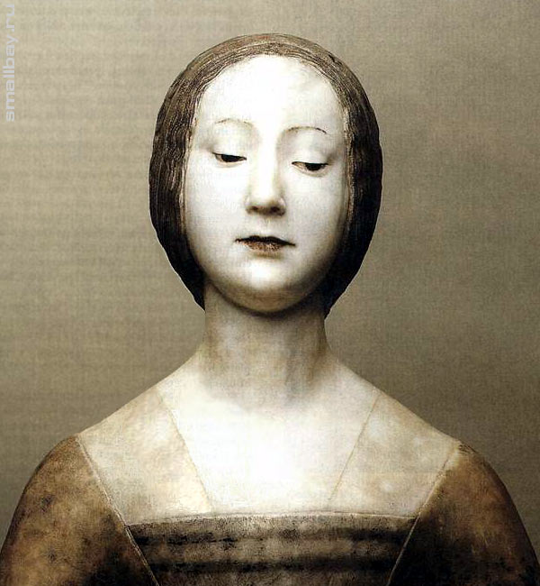

Франческо Лаурана
Франческо Лаурана (італ. Francesco Laurana), власне Франьо із Врани (хорв. Franjo Vranjanin); бл. 1430, Задар або Врана, біля Задара — 1502, Марсель або Авіньйон) — італійський скульптор і медальєр епохи Раннього Відродження родом із Далмації; учень Джорджо да Себеніко. Франческо Лаурана брав участь у створенні багатофігурного рельєфу для тріумфальної арки Альфонсо Арагонського (Неаполь, замок Кастель-Нуово), де працював у 1453—1458 роках. У 1458 році переїхав до Франції, де почав працювати при дворі Рене Анжуйського (1461—1466), виготовляючи портретні медалі у манері Пізанелло. Потім перебрався на Сицилію, і на початку 1470-х повернувся до Неаполю. У 1475—1481 роках виконав скульптурный декор каплиці Сен-Лазар в Старому соборі у Марселі.
«Жіно́че погру́ддя»
«Жіно́че погру́ддя» або «Ідеальний портрет Лаури» — скульптурний портрет роботи італійського скульптора Франческо Лаурани (1430—1502). Створений близько 1490 року. Зберігається у Кунсткамері у Музеї історії мистецтв, Відень. Художник-передвижник Франческо Лаурана, родом із Далмації, поширював ідеали Ренесансу під час своїх подорожей по Південній Італії та Південній Франції. В центрі його художньої творчості знаходиться група жіночих погрудь, про які майже нічого невідомо. Оскільки роботи настільки схожі одна на одну у загадкому виразі обличчя і втілюють стилізацію ідеалу краси, їх важко зв'язати із реальними історичними особами. Погруддя нині зберігаються в різних музеях світу. Екземляр, який зберігається у Відні, зберігся найкраще за інші, оскільки на ньому в основному збереглось первісне забарвлення із виліпленими з воску ніжними червоними бутонами у золотій сітці для волосся. На чолі у жінки раніше знаходився справжній дорогоцінний камінь. Існують припущення, що це жіноче погруддя є портретом Елеонори або Ізабелли Арагонської, або ймовірно Іпполіти Марії Сфорца.